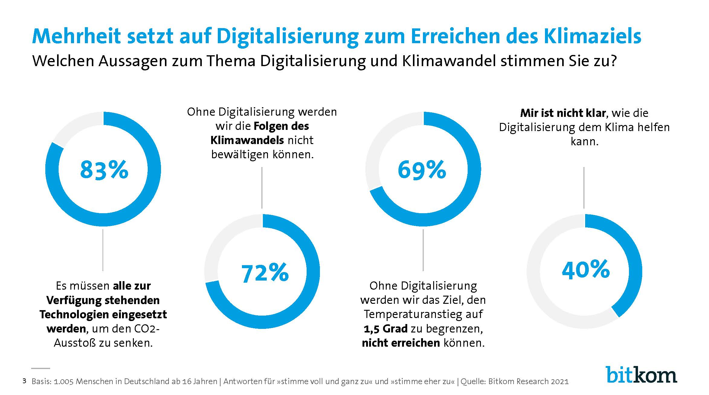

Die Deutschen wünschen sich mehr digitalen Umweltschutz

22 Prozent entsorgen Elektrogeräte aus Unkenntnis im Hausmüll
Drei Viertel sehen in der Digitalisierung eine Chance für das Klima
Fliegen, Fleisch, Fernseher – darauf könnten die Menschen am ehesten verzichten
Neue Bitkom-Studie zu Digitalisierung und Umwelt
Berlin,
- Surfen, streamen, E-Mails schreiben: Mehr als 60 Millionen Menschen in Deutschland nutzen das Internet
– und produzieren damit indirekt erhebliche Mengen CO2. Viele achten jedoch auch darauf, die damit
verbundenen Klimawirkungen zu begrenzen oder positive Klimaeffekte zu erzielen. Das gelingt den
Verbraucherinnen und Verbrauchern bei der Online- und Gerätenutzung bereits gut – so verzichtet jeder
und jede Zweite mittlerweile auf Stand-by. Zugleich gibt es aber auch Defizite, etwa bei der korrekten
Entsorgung von ausrangierten Elektrogeräten, die bei einem Fünftel (22 Prozent) schon einmal im Hausmüll
gelandet sind. Und die Deutschen fordern von der Politik, die Digitalisierung stärker zur Erreichung der
Nachhaltigkeitsziele einzusetzen. Das sind Ergebnisse einer repräsentativen Befragung im Auftrag des
Digitalverbands Bitkom unter 1.005 Menschen in Deutschland ab 16 Jahren.
Demnach löschen bereits 61 Prozent überflüssige E-Mails, Daten oder Apps auf ihren Geräten, um
Speicherressourcen freizugeben und damit Energie zu sparen. Die Hälfte (51 Prozent) vermeidet Stand-by,
schaltet elektronische Geräte also komplett ab. 44 Prozent verwenden, wenn möglich, die
Energiesparfunktion bei Laptops oder Monitoren. Ein Fünftel (21 Prozent) reduziert die Helligkeit von
Bildschirmen, um Energie zu sparen, fast ebenso viele (19 Prozent) setzen aus diesem Grund bewusst auf
die Verwendung eines kleineren Bildschirms. Drei Viertel (74 Prozent) achten auch darauf, Geräte
möglichst lange zu nutzen, bevor sie ersetzt werden.
Ein Drittel hat Auto-Play deaktiviert
Bei der Internetnutzung setzen 55 Prozent auf LAN oder WLAN statt mobiler Daten – dies verbraucht in der
Regel weniger Energie. Jeder und jede Dritte (35 Prozent) hat beim Videostreaming die Auto-Play-Funktion
deaktiviert, damit nicht unnötig Videos abgespielt werden. Ebenfalls ein Drittel (35 Prozent) trägt sich aus
Newsletter-Listen aus oder bestellt E-Mail-Dienste ab. Noch nicht so weit verbreitet ist die Angewohnheit,
Videos in geringerer Auflösung zu streamen, was deutlich energieärmer ist: 13 Prozent tun dies. 6 Prozent
nutzen ökologische Suchmaschinen oder E-Mail-Dienste, bei denen Server ausschließlich mit erneuerbaren
Energien betrieben und Einnahmen teilweise in Umweltprojekte investiert werden. 5 Prozent kompensieren
CO2-Emissionen mithilfe entsprechender Apps oder Websites. Die Nutzung des Internets und digitaler Geräte
gehört für die meisten Menschen zum Leben dazu. Dabei gibt es ein wachsendes Bewusstsein für die
Klimarelevanz digitaler Technologien, sagt Bitkom-Hauptgeschäftsführer Dr. Bernhard Rohleder. Das
eigene Nutzungsverhalten zu überprüfen und Anpassungen vorzunehmen, kann einen wichtigen Beitrag zum
Klimaschutz leisten. Dabei würden die CO2-Emissionen umso geringer ausfallen, je nachhaltiger und
ökologischer der Energiemix in Deutschland ist. Die neue Bundesregierung muss den Strommix auch mit Blick
auf die Digitalisierung schneller und konsequenter in Richtung regenerativer Energiequellen vorantreiben,
betont Rohleder. Das sehen auch die meisten Deutschen so: 9 von 10 Bundesbürgerinnen und Bundesbürgern (90
Prozent) fordern einen schnellen Ausbau erneuerbarer Energien.
Das Internet ist für junge Menschen unverzichtbar
Gefragt danach, worauf sie im Sinne des Klimaschutzes am ehesten verzichten könnten, nennen 38 Prozent das
Fliegen. 3 von 10 (30 Prozent) würden auf Fleisch verzichten. Lediglich 16 Prozent könnten ohne Smartphone
leben – und 13 Prozent ohne Internet. Junge Menschen zwischen 16 und 29 Jahren setzen dabei andere
Prioritäten als der Rest der Gesellschaft: Während unter ihnen fast die Hälfte (46 Prozent) auf das Fliegen
verzichten könnte und 39 Prozent auf Fleisch, ist es für sie nahezu ausgeschlossen, auf das Internet zu
verzichten (1 Prozent). Das Auto steht dagegen bei allen Deutschen hoch im Kurs: Nur eine Minderheit von 6
Prozent (gesamt) bzw. 10 Prozent (16 bis 29 Jahre) würde darauf verzichten können.
Welche Bedeutung hat die Digitalisierung aus Sicht der Bevölkerung für das Klima? Insgesamt nehmen drei
Viertel (74 Prozent) den Standpunkt ein, die Digitalisierung stelle eine Chance für das Klima dar. 21
Prozent betonen dagegen die Risikoperspektive. 83 Prozent der Bundesbürgerinnen und Bundesbürger fordern,
alle zur Verfügung stehenden Technologien einzusetzen, um den CO2-Ausstoß zu senken. 69 Prozent glauben,
dass sich das 1,5-Grad-Ziel ohne Digitalisierung nicht erreichen lässt. Gleichwohl sagen auch 40 Prozent,
ihnen sei nicht klar, wie die Digitalisierung dem Klima helfen kann. Mit der Digitalisierung halten wir
einen starken Hebel in der Hand, um den CO2-Ausstoß schnell und effektiv zu senken, so Rohleder. In
der Industrie reduzieren Sensoren und smarte Maschinen den Energiebedarf auf ein Minimum. Automatisierte
Systeme wirken unnötigem Heizen und Kühlen von Gebäuden entgegen. Durch Videokonferenzen und mobiles
Arbeiten lassen sich Dienstreisen und Autofahrten in Büros vermeiden.
Gleichwohl sind unter den Bürgerinnen und Bürgern vor allem Nachteile der Digitalisierung in Bezug auf das
Klima bekannt: 94 Prozent stimmen der Aussage zu, dass für die Herstellung technischer Geräte Rohstoffe
ausgebeutet werden. Ebenso viele (94 Prozent) sehen als Nachteil die Verursachung von Elektroschrott. 89
Prozent sagen, digitale Technologien befeuern den Konsum – und 85 Prozent kritisieren den immensen
Stromverbrauch des Internets. Als Vorteil der Digitalisierung wird vor allem genannt, dass Unternehmen mit
ihrer Hilfe CO2 einsparen können (87 Prozent) und dass digitale Technologien für neue, klimaschonende
Geschäftsmodelle sorgen (76 Prozent). Dass auch Verbraucherinnen und Verbraucher mithilfe digitaler
Technologien CO2 einsparen können, sehen 55 Prozent als Vorteil. Jeder und jede Zweite (49 Prozent) sagt:
Digitale Technologien ermöglichen die Energiewende. Rohleder:
Wichtig ist, dass wir deutlicher aufzeigen, wo und wie mit digitalen Lösungen Energie eingespart werden
kann. Das CO2-Einsparpotenzial digitaler Technologien ist fünf Mal höher als ihr eigener Fußabdruck. Je
informierter Politik, Unternehmen und Verbraucherschaft sind, desto besser kann jeder sein Wissen in
konkretes Handeln übersetzen – und damit dem Klima helfen.
PC-Zubehör landet bei 12 Prozent der Deutschen im Hausmüll
Ob Smartphones, Laptops oder der alte Fernseher: Der Umgang mit Elektroschrott ist für die
Deutschen ebenfalls ein wichtiger Aspekt in Bezug auf Umwelt- und Klimaschutz. Gleichwohl tun
sich viele Menschen schwer, wenn es um die fachgerechte Entsorgung von IT- und Elektrogeräten
geht. So sagen 92 Prozent, durch herumliegende Altgeräte würden wertvolle Rohstoffe
verschwendet. 40 Prozent geben aber auch zu, in ihrem Haushalt würde es zu viele ungenutzte
Altgeräte geben. 39 Prozent empfinden die Entsorgung als zu aufwändig – und 22 Prozent haben
schon mal ein Elektrogerät im Hausmüll entsorgt, weil sie nicht wussten, wie es richtig zu
entsorgen ist. Rohleder: Umweltschutz lebt vom Mitmachen. Und mitmachen kann nur, wer weiß,
wie das geht.
38 Prozent der Menschen in Deutschland haben in den vergangenen 12 Monaten tatsächlich auch ein
IT-Gerät entsorgt oder weitergegeben. PC-Zubehör wie Computermäuse, Tastaturen oder Webcams
haben 17 Prozent aussortiert, jeder und jede Achte ein Smartphone (12 Prozent). Ein Zehntel (9
Prozent) hat sich von einem Desktop-PC getrennt und 7 Prozent von einem Fernseher. Monitore (5
Prozent), Drucker/Scanner (5 Prozent), Spielkonsolen (4 Prozent), Laptops/Tablets (je 3 Prozent)
wurden von etwas weniger Menschen entsorgt. Nicht immer ist dies jedoch fachgerecht geschehen:
Ein Achtel derer, die PC-Zubehör entsorgt haben, haben es in den Hausmüll geworfen (12 Prozent).
Die übrigen brachten die Geräte zurück zum Händler (23 Prozent), zu einer Sammelstelle oder zum
Recyclinghof (32 Prozent) oder verkauften bzw. verschenkten die Geräte (23 Prozent). Im
Vergleich höherpreisige Geräte wie Smartphones landen eher nicht im Hausmüll (1 Prozent),
sondern werden vor allem verkauft bzw. verschenkt (36 Prozent), zur Sammelstelle oder dem
Recyclinghof gebracht (35 Prozent) oder beim Händler abgegeben (25 Prozent). Ausrangierte
Geräte gehören auf keinen Fall in den Hausmüll. Funktionsfähige Geräte sollten gespendet oder
weiterverkauft, defekte Geräte müssen fachgerecht entsorgt werden, betont Rohleder. Da von
2022 an auch Supermärkte und Discounter Altgeräte annehmen müssen, dürfte sich die Rückgabequote
aus Bitkom-Sicht demnächst deutlich erhöhen.
Potenziale digitaler Technologien für den Klimaschutz ausschöpfen
Fast jeder und jede Zweite (49 Prozent) bewertet den Klimawandel aktuell als das größte und drängendste
Problem. Für weitere 27 Prozent ist er eines der wichtigsten Probleme. Für ein Zehntel (11 Prozent) ist er
ein Problem wie viele andere auch und 8 Prozent halten den Klimawandel für kein besonders großes Problem.
Nur eine Minderheit von 3 Prozent ist der Meinung, es gebe ihn nicht. Mit Blick auf die künftige
Klimapolitik plädiert eine große Mehrheit der Bundesbürgerinnen und Bundesbürger für ambitionierte Ziele.
Insgesamt drei Viertel (74 Prozent) fordern, dass Deutschland bereits vor 2045 klimaneutral sein soll: 19
Prozent wünschen sich dies schon für 2025, 34 Prozent bis 2030 und 21 Prozent bis 2040. Ein Viertel (23
Prozent) lehnt ein Vorziehen der Klimaneutralität jedoch kategorisch ab.
86 Prozent der Deutschen sagen, es sollte ein Förderprogramm zur nachhaltigen Digitalisierung der Wirtschaft
geben. 82 Prozent fordern, die Verwaltung müssen digitaler werden, um Papier und andere Ressourcen zu
sparen. Bitkom- Hauptgeschäftsführer Dr. Bernhard Rohleder: Deutschland will 2030 65 Prozent weniger
Treibhausgase ausstoßen als 1990. Ein breit angelegtes Digitalisierungsprogramm ist hier von allen
Instrumenten das wirksamste. Bislang gebe es allerdings kaum politisch gesteuerte Anreize für
Unternehmen, gezielt in digitale Anwendungen für den Klimaschutz zu investieren. Wir brauchen ein
Programm, das solche digitalen Technologien gezielt fördert, die für mehr Nachhaltigkeit sorgen.
Technologien, die klare Vorteile für Klima und Umwelt gegenüber traditionellen Verfahren haben, müssen zügig
in die Fläche gebracht werden.
- Wie die im Frühjahr 2021 veröffentlichte Bitkom-Studie Klimaeffekte der Digitalisierung zeigt, kann
Deutschland durch einen beschleunigten Einsatz digitaler Technologien einen großen Teil der notwendigen
CO2-Einsparungen erreichen. Große Potenziale gibt es unter anderem in den Bereichen Industrie, Mobilität und
Gebäude. Zur Studie: www.bitkom.org/klimaschutz
Hinweis zur Methodik: Grundlage der Angaben ist eine Umfrage, die Bitkom Research im Auftrag des
Digitalverbands Bitkom im September 2021 durchgeführt hat. Dabei wurden 1.005 Menschen in Deutschland ab 16
Jahren telefonisch befragt. Die Umfrage ist repräsentativ.